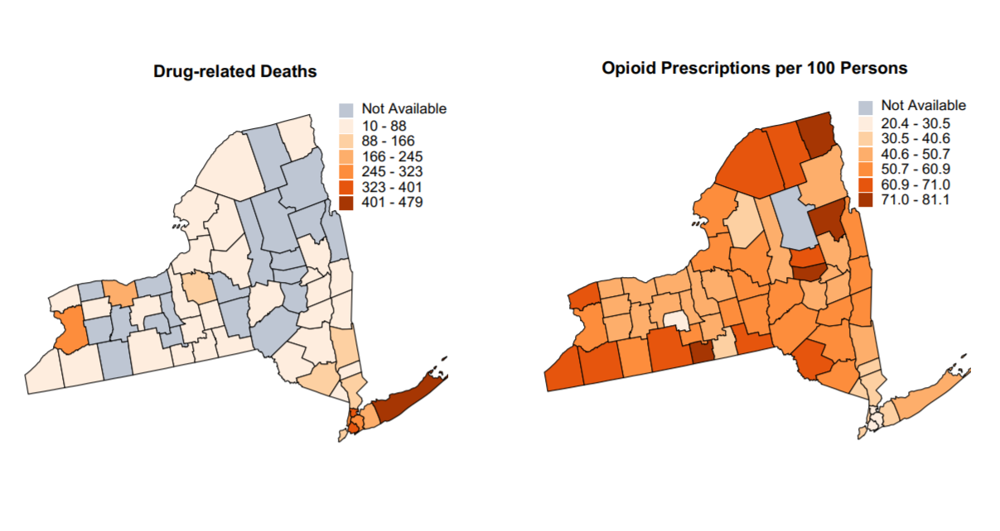
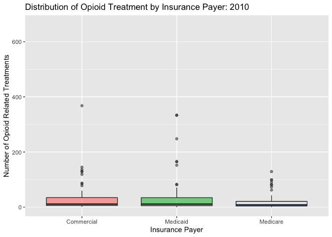

Project Report
Julia Thomspson (jt3175) | Hana Akbarnejad (ha2546) | Olivia Wagner (oew2106) | Jared Garfinkle (Jsg2145) | Alison Elgass (are2132)
Motivation
“Opioids kill more people each year than traffic accidents, than guns. Increasingly, they’re killing children. New synthetic drugs are emerging – cocktails so potent even touching them can lead to injury or death…”
The United States has been experiencing its most death-dealing drug overdose epidemic that had charged with prescription painkillers and an increased use of street drugs such as heroin and illicit fentanyl. This crisis has reached a point that it not only affecting adolescence, but also it is affecting the generation of babies that get born. According to the White House, “The number of babies born drug-dependent increased by 500 percent between 2000 and 2014. Almost a third of all children placed in foster care are from families with parental drug abuse”.
Comparing data from New York City, we can see that in 2017, the rate of opioid-involving deaths was 16.1 deaths per 100,000 persons compared to the average national rate of 14.6 deaths per 100,000 persons. Someone dies of a drug overdose every 7 hours, and 82 percent of the 1,374 overdose deaths in 2016 were from an opioid. As an overview, the following maps show the number of drug related deaths, as well as the number of opioid prescriptions in different counties.

The aforementioned figures lead us to focus on the aspects of this crisis in NYC counties. Our goal is to find out any meaningful trends in demographics of people who were affected by opioid overdose in New York City. For instance can we see any alerting trends in certain age groups, gender, or racial groups? How do these trends change over the years? Also, historically, we know that drug epidemics have been mostly limited to cities, but it is interesting to know that there have been opioid overdoses spikes taking place in suburban and rural areas, recently. So, we also want to investigate the difference of opioid-related death in urban and rural areas. We also wanted to explore the number of Emergency Room visits, the number of opioid-related death, and the number of pills prescribed to see if there is any meaningful and significant relationship between the different counties of New York City. We hope that through this exploration, we can elucidate the role that public health can play in allaying this deadly, fast-growing epidemic.
Initial Questions
When investigating our datasets described below, we were primarily interested in urban vs rural communities as they related to opioid deaths. We were also interested in the county-level differences within New York, particularly because the state has such variety. Manhattan is very different from somewhere upstate, like Albany. We thought it would be interesting to consider the trends in pill prescription of different counties. Additionally, we wanted to look into opioid-related treatment visits in the counties in New York.
As the project evolved, we became curious about more individual-level data as well as the county level data described above. We thought that investigating demographics could provide insight into the opioid epidemic in New York. This led to questions about whether or not opioid deaths change over time with respect to race, age, or gender. Finally, we wanted to know if the type of insurance a person had related to the number of opioid-related facility visits. For example, were there more visits paid for by Medicare vs Medicaid?
Our final research questions were as follows:
How do opioid deaths change over time in the following categories:
Race
Age
Gender
Rural/Urban
How does the type of insurance a person has relate to the number of opioid-related facility visits?
How do opioid related treatment visits and deaths differ by county?
How do the number of pills prescribed differ by county over time?
Data
amfAR Data: Distance to Treatment Facility amfAR is a non-profit which publishes data related to the HIV epidemic. The data set we utilized contains the average distance from each county to an opioid related treatment facility.
New York State Health Data: Opioid related Treatments and Deaths This data set details opioid related treatments from, including both inpatient and outpatient treatment for opioid diagnoses from 2010 to 2015. The data is then categorized by county, year, whether the county is urban or rural, and the insurance of the patient. An additional data set in the New York health data which included the number of opioid related deaths from 2003 to 2017 was also utilized.
ARCOS Data: Pills Perscribed by County The ARCOS data set is published by the Washington Post as part of a database which tracks opioid perscriptions from manufacturer to patient between 2006 and 2012. We utilized the data related to the number of pills perscribed to patients in each U.S. county, filtering for the counties in New York state.
Government Data: Medication Take-Back Facilites Finally, we used govenment data which provided the location of medication take-back facilities. This data was limited to counties in New York state, and the distance was mapped against opioid related deaths and treatments. The medication take-back facility data was collected in 2017.
Exploratory Analysis
We loaded and cleaned the data, filtering by relevant years and joining appropriate datasets. For code on how the animated graphics were generated, you can view the animated_graphs.rmd file here on our Github repository.
opioid_death_data = janitor::clean_names(read_csv('./opioid_related_deaths.csv'))
opioid_treatment_distance = janitor::clean_names(read_csv('./distance_to_treatment.csv'))
opioid_demographics = janitor::clean_names(read_csv("./opioid_demographics.csv"))
opioid_er_data = read_csv('./opioid_related_visits.csv') %>%
janitor::clean_names()
prod_county = arcos::summarized_county_annual(state = "NY", key = "WaPo") %>%
janitor::clean_names()
county_pop = arcos::county_population(state = "NY", key = "WaPo") %>%
janitor::clean_names()
# clean opioid death data #
opioid_death_data = opioid_death_data %>%
filter(year >= 2010) %>%
mutate(county = recode(county, "Kings (Brooklyn)" = "Kings",
"New York (Manhattan)" = "New York",
"St Lawrence" = "St. Lawrence"))
# clean opioid er data #
opioid_er_data = opioid_er_data %>%
select(year, patient_county_name, rural_urban, payer, er_opioid, inpatient_total_opioid, er_inpatient_total_opioid, outpatient_opioid, overall_opioid) %>%
rename(county = patient_county_name)
# Combine Data Sets #
opioid_total_data = left_join(opioid_er_data, opioid_death_data, by = c('county', 'year')) %>%
arrange(county, year)In our analysis, we created a series of graphs and animations which detail how the opioid crisis is affecting New Yorkers in different areas of the state over time. The information below is synthesised from the results of our analysis. You can use the links to navigate to the appropriate page in our website, and view code by clicking code on the right side.
Demographics
Initially, we were interested in how demographics altered opioid addicition over time. We broke down the death count by age, race and gender. The plots, which are included under the demographics tab in analysis, show the following trends related to opioid overdosing.
- There are signficiantly more men than women who die of opioid related deaths. In recent years that differential has only increased.
opioid_demographics %>%
filter(region == "NYC") %>%
group_by(year, sex) %>%
summarize(
count = sum(opioid_poisoning_deaths)
) %>%
plot_ly(x = ~year, y = ~count, type = "bar",
color = ~sex, alpha = 0.5)- Non-hispanic white people are more likely to die of opioid poisioning. Though there has been an increase in opioid related deaths for all ethnicities, white non-hispanic people continually extend their lead in opioid poisionings.
deaths_age_grp = read_csv("./data/deaths_age_group.csv") %>%
janitor::clean_names() %>%
pivot_wider(
names_from = age_group,
values_from = opioid_poisoning_deaths
) %>%
janitor::clean_names()
deaths_by_year = deaths_age_grp %>%
select(year, region, race_or_ethnicity, sex, total) %>%
group_by(year, race_or_ethnicity) %>%
summarize(
count = sum(total)
) %>%
mutate(
race_or_ethnicity = factor(race_or_ethnicity, levels = c("Not Stated", "Other Non Hispanic", "Black Non Hispanic", "Hispanic", "White Non Hispanic"))
)
deaths_by_year %>%
plot_ly(x = ~year, y = ~count, type = "bar",
color = ~race_or_ethnicity, alpha = 0.5)- We see an exponential increase of opioid poisoning deaths between the ages of 20 and 64 from 2004 and 2016. All other ages remained relatively stable at low levels of opioid related deaths between those years.
deaths_by_age = read_csv("./data/deaths_age_group.csv") %>%
janitor::clean_names() %>%
select(-region, -race_or_ethnicity, -sex) %>%
filter(age_group != "Total") %>%
group_by(year, age_group) %>%
summarize(
count = sum(opioid_poisoning_deaths)
) %>%
ungroup()
deaths_by_age %>%
plot_ly(x = ~year, y = ~count, type = "scatter", mode = "lines+markers",
color = ~factor(age_group), alpha = 0.5)- Finally, between the years 2010 and 2015 we notice that the distribution of opioid related treatment is relatively even between commerical insurance and medicaid with medicare paying for far fewer cases on average. This seems to change in 2015 when medicaid outpaces commerical insurance in the distribution of the number of opioid treatments paid for by county.

Having looked at who the opioid crisis affects in New York state, we were interested in the areas where people were most affected. Therefore, we looked at the death, treatment and perscription trends by county. From our analysis we were able to glean the following information:
Suffolk county has the third highest death rate related to opioid poisioning and has the highest number of opioid related treatments and number of pills perscribed by doctors.
The counties with the greatest number of opioid related treatments also had a large amount of perscribed opioids, but deaths were not so clearly correlated.
The counties with the highest death rates were also heavily urban counties, with the exception of Sullivan and Green county.
total_death = opioid_death_data %>%
group_by(county) %>%
summarize(
death_sum = sum(opioid_poisoning_deaths)
) %>%
mutate(
county = toupper(county)
)
total_pop = county_pop %>%
select (buyer_county, year, population) %>%
rename(county = buyer_county) %>%
group_by(county) %>%
summarize(
total_pop = sum(population)
)
total_death_pop = left_join(total_death, total_pop) %>%
mutate(
county = factor(county),
death_pop = death_sum/total_pop,
county = fct_reorder(county, death_pop)
)
total_death_pop %>%
plot_ly(
x = ~county, y = ~death_pop, split = ~county,
type = 'bar', alpha = 0.5
)

Additional Analysis
We conducted additional analysis on our data using model building techniques for parameter inference. The process of model building included a stepwise regression on the multiple parameters including population size, region, er visits, and area type (urban v. rural). Parameters were assessed for multicollinearity and contribution to the model fit. Nested simple and complex models were assessed based on the fit of the regression, and the simple model was ultimately chosen. Further analysis including cross validation or bootstrapping could test the final model against future random samples to determine its predictive ability.
Additionally, we used unsupervised learning to assess opioid related trends over time. In this project, we clustered counties by the intercepts and slopes collected from linear models of opioid-related data by county over time. The clusters indicate similar trends in various counties, including the increase or stablization of opioid related treatment and deaths over time. This information might be helpful in determining which counties require the most immediate public health intervention.
Discussion
Opioid related injuries included in our data sets were measured by emergency room visits, deaths, and inpatient treatment. Through demographic and trend analysis, we discovered opioid overdose in New York City affects white people more than other ethnicities, and men more than women, on average. Opioid overdose also tends to affect young adults (ages 25-34) more than any other age group. Furthermore, we notie the number of opioid related incidents in each county is strongly associated with the number of pills prescribed by doctors. This information was, on the whole, expected of our analysis.
One finding that was not expected was that there was no apparent difference between rural and urban areas. This indicates that factors associated with the urban/rural gradient, such as population density, may not have much affect on the prevalence of opioid related injuries. Counties where there were a high number of opioid related treatments did not necessarily have a high number of deaths when adjusting for population size. These counties were further outside of the New York City area, which could be evidence that different interventions may be necessary to prevent opioid related injuries in counties outside the five boroughs.While there is an association between the pills bought per capita and the opioid deaths per 10,000 people, according to our statistical models it may not be safe to assume that reducing opioid prescriptions would decrease opioid injuries.
<<<<<<< HEAD As mentioned in the Aditional Analysis section, there are some public health implications that can be taken from our findings. The information for which populations have the most deaths could provide insight for different initiatives. For instance, programs may benefit from targeting men specifically as they are in a higher risk group. Additionally, there appears to be a slight linear relationship between pills bought per person and opioid-related deaths. This may suggest that prescribing fewer pills could help decrease the number of opioid-related deaths in NY.